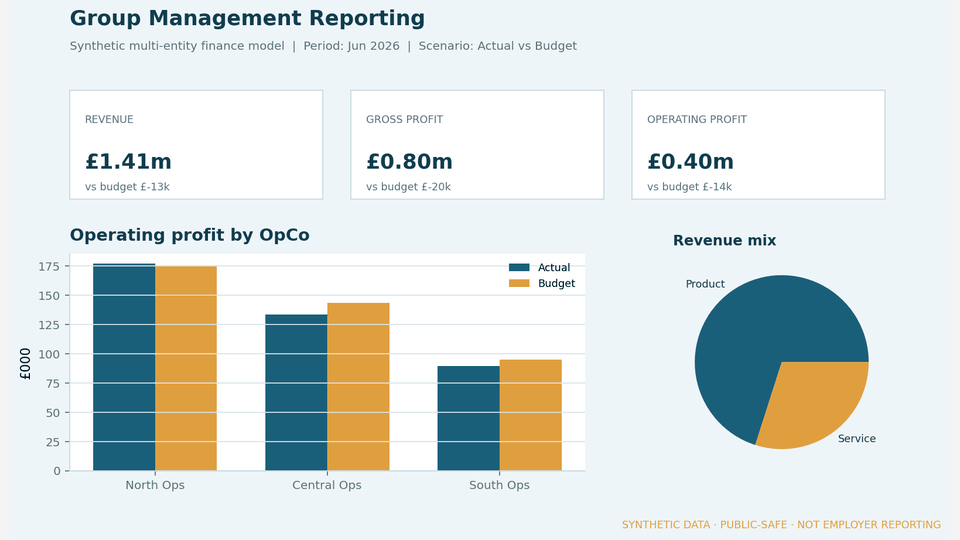
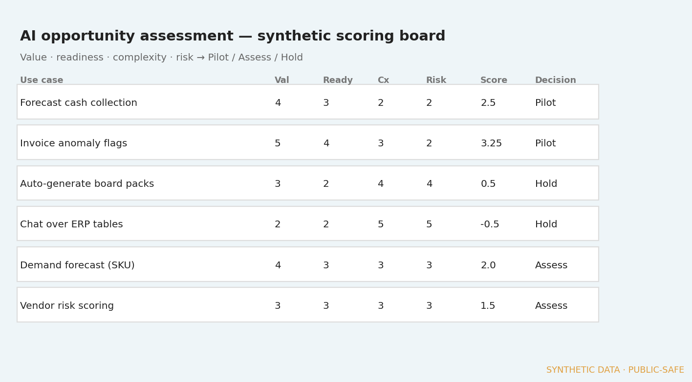

Synthetic demo · Evidence published
Multi-entity finance analytics
- Problem
- Fragmented spreadsheet reporting makes P&L, variance and MTD/YTD hard to trust across entities.
- My contribution
- Public-safe synthetic reference: dimensional model, management measures, labelled stills and a short demo GIF — no employer data.
- Stack
- Star schema · P&L / variance logic · Power BI path · CSV synthetic sources
- Limitation
- Stills, GIF and CSVs are live. Native .pbix export remains optional — figures stay synthetic.
Open full case study →
Architecture, stills, GIF and downloadable CSVs
More in this category
Report GIF on Work; architecture + stills on the case page.

Synthetic reference · Evidence published
Fabric finance analytics path
- Problem
- Ad-hoc extracts do not scale well for governed group reporting.
- My contribution
- Published a synthetic walkthrough: landing → Fabric path → semantic model → management views, using the finance demo facts.
- Stack
- Microsoft Fabric · OneLake concepts · semantic models · Power BI
- Limitation
- No employer Fabric estate. Conceptual stills and lineage only.
Open full case study →
Reference path, lineage board and source notes
More in this category
Architecture SVG on Work; lineage board on the case page.

Synthetic demo · Evidence published
ERP reporting & Business Central support
- Problem
- ERP go-lives need clear reporting requirements, validation and adoption support.
- My contribution
- Public-safe BC-style reference: sales, purchasing, inventory views and a period-close validation board — reporting focus, not full config ownership.
- Stack
- Dynamics 365 Business Central (style) · reporting requirements · UAT / validation
- Limitation
- Stills and CSVs are synthetic. No employer screens, mappings or client data.
Open full case study →
Process flow, operational charts and validation board
More in this category
Process flow on Work; operational charts and validation board on the case page.

Framework · Evidence published
Applied AI opportunity assessment
- Problem
- Teams propose AI ideas without a shared way to judge value, data readiness and operational risk.
- My contribution
- Published a scoring frame (Pilot / Assess / Hold) with synthetic finance and ERP-adjacent examples.
- Stack
- Business analysis · forecasting concepts · governance checklist
- Limitation
- Synthetic examples only. No client AI systems shown.
Open full case study →
Scoring board, value/risk view and decision mix
More in this category
Scoring board on Work; value/risk and decision mix on the case page.

MSc research · Evidence published
Telecom operations anomaly detection
- Problem
- Operational telemetry needs safe handling, anonymisation and testable detection workflows.
- My contribution
- Synthetic bronze / silver / gold pipeline with tests, run controls and labelled stills.
- Stack
- Python · data engineering · anomaly detection · privacy by design
- Limitation
- Public GitHub link withheld until disclosure is cleared. No operator data.
Open full case study →
Layered pipeline, scores and run-control stills
More in this category
Layered pipeline SVG on Work; scores and run-control stills on the case page.

Writing · From finished work
From project to article
- Intent
- On-site notes now accompany finished finance, ERP and AI cases. Medium posts will only be linked when they exist.
- Limitation
- No empty Medium URLs. Newsletter remains the live external channel.
Open writing notes →
Case companions written after evidence exists
More in this category
Evidence-first writing flow; three companion notes on-site.
LinkedIn newsletter →